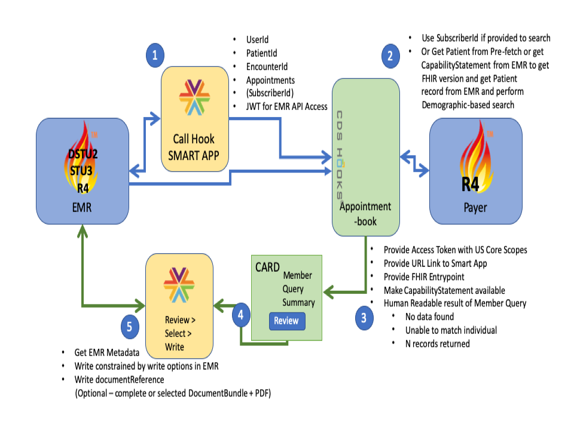

Da Vinci Payer Data exchange
0.1.25 - CI Build
Da Vinci Payer Data exchange
0.1.25 - CI Build
Da Vinci Payer Data exchange - Local Development build (v0.1.25). See the Directory of published versions
This section of the implementation guide defines the specific conformance requirements for systems wishing to conform to this Payer Data Exchange (PDex) Implementation Guide. The bulk of it focuses on the implementation of the CDS Hooks Specification to meet PDex use-cases. It also describes the use of SMART on FHIR and provides guidance on privacy, security and other implementation requirements.
This IG uses a combination of CDS-Hooks and SMART-on-FHIR to enable Providers to issue a query to a Health Plan and to retrieve information about their patient (the Health Plan member) that they MAY review and choose to commit to the patient record in their EMR.
CDS Hooks enables the Health Plan to be queried either via an on-demand transaction triggered from a SMRT-on-FHIR app, or from a workflow event in the EMR that triggers the hook, such as when an apppointment is booked for a patient.
The bulk of the functionality of this specification is implemented using CDS Hooks. The Hooks specification is small. Implementers should read and be familiar with all of it.
CDS Hooks is a relatively new technology. It is considered a Standard for Trial Use, meaning that it will continue to evolve based on implementer feedback and may change in ways that are not compatible with the current draft. As well, the initial version of the specification has focused on the core architecture and a relatively simple set of capabilities. Additional capabilities will be introduced in future versions.
To meet requirements identified by Da Vinci project participants, it is necessary to introduce some additional capabilities above and beyond what is currently found in the CDS Hooks specification. This section of the PDex implementation guide describes those additional capabilities and the mechanism the implementation guide proposes to implement them. The purpose of these customizations is to enable testing at connectathons and to support feedback into the CDS Hooks design process.
When interacting with EMR systems that support FHIR R4 the SMART App SHALL evaluate the EMR System’s CapabilityStatement that the implementation has determined relevant to this SMART-on-FHIR application to determine which of the records selected by the Provider can be written to the EMR via the FHIR API.
Where the EMR’s FHIR API does not enable the SMART App to write a resource via the API the SMART App SHOULD write the records that it is permitted to write to the API. The remaining selected records SHOULD be retained in the EMR in the most appropriate form to allow the provider access to the information when needed. Each capability listed here has been proposed to the CDS Hooks community and may well become part of the official specification, either in the initial release, or in some future release. However, there is a significant likelihood that the manner in which the requirements are met may vary somewhat from a syntax or even an architectural approach. Future versions of this implementation guide will be updated to align with how these requirements are addressed in future versions of the CDS Hook specification. This implementation guide will not be able to be Normative (locked into backward compatibility mode) until the underlying CDS Hooks content is also normative.
This implementation guide extends/customizes CDS Hooks in 4 ways:
Each are described in the following sections.
The hooks published in the CDS Hooks specification provide a list of context resources for the DSTU2 and STU3 versions of FHIR. The CDS Hook specification won’t be updated to include R4 resources until after R4 is finalized. Because this implementation guide is being written to support FHIR R4 as well as STU3 and Argonaut (DSTU2), it provides guidance on what R4 resources are relevant for each hook (both pre-existing hooks as well as newly proposed hooks).
It is possible that the actual list of R4 resources provided for the hooks will differ from that proposed in this IG. Future versions of the implementation guide will adjust accordingly.
The CDS Hooks payload received from an EMR can include DSTU2, STU3 or R4 resources. The Payer’s CDS Hooks service SHALL handle the content in the JSON hooks payload, regardless of version of FHIR used for incorporated resources.
The health plan’s CDS Hooks service SHALL provide access to FHIR R4 resources based on Profiles identified in the US Core, Da Vinci PDex and HRex IGs.
The SMART-on-FHIR App that MAY be called from the returned CDS Hooks card will not translate R4 profiles to earlier versions of FHIR.
When interacting with EMR systems that support FHIR R4 the SMART App SHALL evaluate the EMR System’s CapabilityStatement to determine which of the records selected by the Provider can be written to the EMR via the FHIR API. Where the EMR’s FHIR API does not enable the SMART App to write a resource via the API the SMART App shall write the records that it is permitted to write to the API. The remaining selected records SHALL be compiled into a FHIR bundle, a PDF SHALL be created to provide a human-readable version of the bundle and both documents SHALL be attached as a DocumentReference and commited to the patient’s record.
Where an EMR providing an R4 API prevents the attaching of a FHIR bundle to a DocumentReference the SMART APP SHALL attempt to write the selected records based upon the options listed below for graceful write degradation.
When interacting with EMR systems that support FHIR versions prior to FHIR R4 the SMART App SHALL , where permitted by the target EMR, create a DocumentReference and encapsulate a PDF, human readable version of the records being committed, together with a document bundle that encapsulates the FHIR resources from the health plan that the provider has selected to commit to the patient’s record.
Where the EMR does not support the attachment of FHIR Bundles to a DocumentReference record the SMART App SHALL create a human readable PDF version of the selected resources and attach this document to the DocumentReference and commit to the patient’s record.
Where the EMR does not support the attachment of PDF Documents to a DocumentRefernece record the SMART App SHALL create an HTML or XHTML document that contains the selected resources and attach this document to the DocumentReference and commit to the patient’s record.
Where the EMR does not support the attachment of HTML/XHTML documents to a DocumentRefernece record the SMART App SHALL create a human readable ASCII text version of the selected resources and attach this to the DocumentReference and commit to the patient’s record.
To summarize this graceful degradation in functionality the priority for writing information to a target EMR should be:
The base CDS hooks 1.0 specification defines the following hooks:
The expectation is that new hooks will be defined by and eventually formally approved by the community. The formal process for this proposal and maturity development process is still evolving. Individuals interested in this process can provide feedback here.
Defining new hooks is an expected part of the CDS Hooks specification and there is no need for hooks to be officially registered with the community for them to be used. However, using registered hooks increases the likelihood of broad adoption by the community - which increases the likelihood of broad uptake of this implementation guide. The project is proposing hooks that build on proposals made in the Da Vinci CRD IG.
This IG uses a modified appointment-book hook. Subscriber Id is declared as an OPTIONAL context field.
Subscriber Id or Member Id, if available, SHOULD be taken from the Patient’s Coverage record, or be manually entered by the Provider via the SMART-on-FHIR App.
If the Member Id is not available the Subscriber ID and the patient information from the Coverage.beneficiary element SHOULD be used to uniquely identify the member.
Sharing of Member health information via PDex SHALL use the CDS Hooks specification. Connection to health plan systems SHALL be supported via the following hook:
The overall flow of the SMART-on-FHIR and CDS-Hooks interaction is summarized in the diagram below:
|  |
It is possible that this hook will change over the course of the review/approval process, including changes to the names of the hooks, their context parameters or other information. Future versions of this implementation guide will be updated to align with such changes. Additional hooks may also be added.
This IG defines an extension to the appointment-book hook. The additional optional context fields are:
NOTE: Even pre-existing hooks are not yet locked down as normative and similar changes are possible, though perhaps less likely.
A sample of the CDS Hook for appointment-book is included below:
{
"hookInstance": "d1577c69-dfbe-44ad-ba6d-3e05e953b2ea",
"fhirServer": "http://fhir.example.com",
"fhirAuthorization" : {
"access_token" : "some-opaque-fhir-access-token",
"token_type" : "Bearer",
"expires_in" : 300,
"scope" : "patient/Patient.read patient/Observation.read",
"subject" : "cds-service4"
},
"hook": "appointment-book",
"user": "Practitioner/example",
"context": {
"userId" : "Practitioner/A12365498",
"patientId" : "EMR1239876",
"encounterId" : "654",
"appointments" : [],
}
"extension" : {
"memberId" : "HP567123489",
"coverage" : "Coverage/
}
}
If a Health Plan does not provide a Member Id on a coverage card the extension can reference a Coverage resource that contains the Subscriber Id and plan details and the beneficiary information (ie. the member demographic information).
Any identifiers associated with the coverage for the patient (which may include patient demographics) SHOULD be obtained from the FHIR Coverage record for the patient, or MAY be entered manually by the provider via the SMART-on-FHIR App.
PDex supports three common scenarios where CDS Hooks SHOULD be used:
The hook interaction for these scenarios is:
When a Card is returned from the CDS Hooks appointment-book service by a Health Plan it will provide the following elements:
The SMART-on-FHIR App MAY be configured with default FHIR search queries that can be set by the Clinician, or their organization.
Examples of preset search queries parameters MAY include, but are not limited to:
The later three items are used to enable the Provider to exclude information that they may already have in their system. These query parameters are examples of FHIR API queries. Any valid FHIR search query for a Patient MAY be constructed by the Provider. The potentially valid search query parameters will be limited by the options provided in the Health Plan’s FHIR API CapabilityStatement.
As a minimum the Health Plan’s FHIR API SHALL limit returned results to the records that are related to the Patient/Member that is the subject of the Provider query.
As a minimum searches of FHIR Resources SHOULD support the following query parameters where appropriate for a Resource Type:
An example CDS Hooks Response Card is shown below:
{
"cards": [
{
"summary": "Provider Member History Request",
"indicator": "success",
"detail": "Response from Payer Appointment-Book Hook",
"source": {
"label": "Static Member History Response",
"url": "https://example.com/fhir/"
},
"links": [
{
"label": "SMART Example App",
"url": "https://smart.example.com/fhir/Patient/123456789",
"type": "smart"
}
]
}
]
}
This implementation guide sets expectations for two types of systems:
Client systems are electronic medical records, pharmacy systems and other clinical and administrative systems responsible for the ordering and execution of patient-related services. These are systems whose users have a need for discovery of patient information from health plans who have provided coverage to the patient.
Payer systems are systems run by health plans/insurers that provide insurance coverage to the patient and can provide claims history clinical information and benefits information about the patient.
The requirements and expectations described here are not intended to be exhaustive. Health plans and clients MAY support additional hooks, additional card patterns, additional resources, additional extensions, etc. The purpose of this implementation guide is to establish a baseline of expected behavior that communication partners can rely on and then build from. Future versions of this specification will evolve based on implementer feedback.
IG © 2020+ . Package hl7.fhir.us.davinci-pdex#0.1.25 based on FHIR 4.0.1. Generated 2020-10-19
Links: Table of Contents |
QA Report
| Version History |
Search |
 |
Propose a change
|
Propose a change